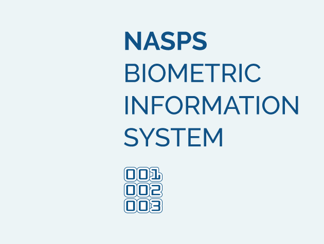

Population is the primary heritage of every country. Availability of accurate and comprehensive information of the population will allow the government to use this information to plan future economic, national, and social development of the country.
BIS is envisioned for creation of the National Population Register where data of each individual is actualized and used by the authorized users in real time.
BIS is a universal instrument for the government which not only improves the quality of administrative services provided to citizens and businesses but also helps the state play a significant role in the area of world security and allows for more effective planning for economic development and faster reaction to international challenges.
Usage of the system begins with the birth of a child and continues throughout the life of each at different stages of life journey. The update of relevant information about each person is automated and done through the creation of a unique identification number called PIN which links personal data across all population register (link 1).
BIS (link 1) and identification cards are actively used during elections and referendums to create a reliable electoral system which meet world standards. The system will eliminate any unauthorized manipulations of elections and referendums.
The State acquires an entirely independent and secure high-end registration system which provides: